演唱類【出版獎】
6 個獎項年度專輯獎
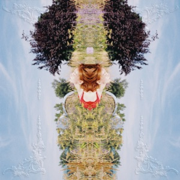
開
洪佩瑜
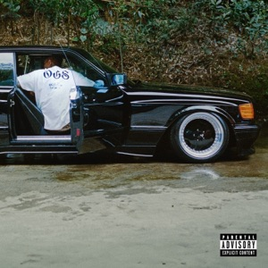
OGS
頑童MJ116

跟著感覺走
張震嶽

Pleasure
JOLIN蔡依林

離開銀色荒原
裘德
純妹妹
單依純

圓缺
鄭宜農

做一個惜情軟心的人
蕭煌奇

主題歌
蘇明淵

褪褲lān的兄弟
吳永吉

我說
CJ MiT

南方的冬
阿依·羅

Final Girl
ana

下回上去
春麵樂隊
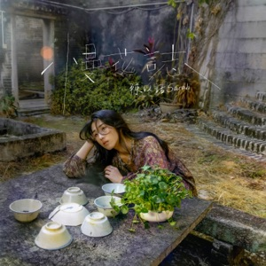
慢花誌
陳以諾Sarah

Ngai
黃宇寒

Masonolay i Cepo'
漂流出口

Saitikotiko
高金龍 Lawis Aow

AKA
Arase 阿拉斯
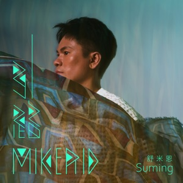
Mikerid 引路
Suming 舒米恩

djekuacan 年少不努力
Matzka

Same Stories, Different Narratives
鶴 The Crane

QUIT QUIETLY
落日飛車
年度歌曲獎

三菜一湯 In the Middle
楊世暄
製作名單
作曲：楊世暄
作詞：楊世暄浪人的...
張震嶽
製作名單
作曲：張震嶽
作詞：張震嶽Pleasure
JOLIN蔡依林
製作名單
作曲：JOLIN蔡依林、Ross Golan、Richard Craker、王永良、Valentina Ploy
作詞：JOLIN蔡依林、Ross Golan、Richard Craker、王永良、Valentina Ploy
老翅膀
陳小霞
製作名單
作曲：陳小霞
作詞：姚若龍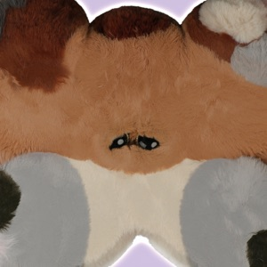
如果每天都可以 happy happy 誰想要sad:))
陳嫺靜
製作名單
作曲：陳嫺靜
作詞：陳嫺靜
我的存在就是愛你
張惠妹
製作名單
作曲：Shawn尚融、呂尚霖、雅妮
作詞：小寒
幸福在歌唱
A-Lin
製作名單
作曲：李方睿
作詞：林孝謙
最佳華語專輯獎
開
洪佩瑜
OGS
頑童MJ116
跟著感覺走
張震嶽
Pleasure
JOLIN蔡依林
離開銀色荒原
裘德
純妹妹
單依純
最佳台語專輯獎
圓缺
鄭宜農
做一個惜情軟心的人
蕭煌奇
主題歌
蘇明淵
褪褲lān的兄弟
吳永吉
我說
CJ MiT
最佳客語專輯獎
南方的冬
阿依·羅
Final Girl
ana
下回上去
春麵樂隊
慢花誌
陳以諾Sarah
Ngai
黃宇寒
最佳原住民語專輯獎
Masonolay i Cepo'
漂流出口
Saitikotiko 一次又一次
高金龍 Lawis Aow
AKA
Arase 阿拉斯
Mikerid 引路
Suming 舒米恩
djekuacan 年少不努力
Matzka
演唱類【個人獎】
14 個獎項最佳作曲人獎

大濛的暗眠
9m88
入圍：盧律銘
你攏無咧看
蕭煌奇
入圍：蕭煌奇、滴燙 Diiton
浪人的...
張震嶽

數到十
曾沛慈
入圍：張簡君偉
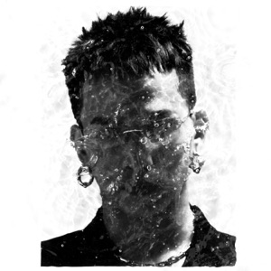
若無你我欲去佗位
黃奇斌
銀色荒原
裘德
最佳作詞人獎
媽媽的眼睛
張震嶽

成人之美
彭佳慧
入圍：小寒
礦工兄弟
吳永吉
入圍：武雄

WAR & LUV
Gummy B
入圍：黃立堯
銀色荒原
裘德
入圍：李格弟
最佳編曲人獎
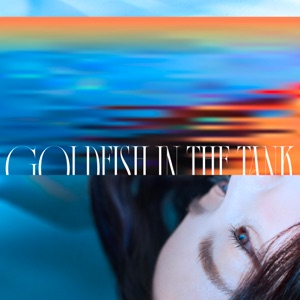
厭倦一個人旅行
aDAN薛詒丹
入圍：翁光煒
FLAMES
周湯豪
入圍：周湯豪、Seann Bowe、韋恩林、Ruben Cardenas
DIY
JOLIN蔡依林
入圍：陳星翰、鄭人豪、Morrison Ma、CYH、Richard Craker、Jackson Dimiglio-Wood

輕功水上飄
YELLOW黃宣
銀色荒原
裘德
入圍：裘德、崔展鴻
最佳專輯製作人獎

來了
巴奈
入圍：蕭賀碩
Same Stories, Different Narratives
鶴 The Crane
QUIT QUIETLY
落日飛車
入圍：王昱辰、曾國宏
Pleasure
JOLIN蔡依林
入圍：JOLIN蔡依林、陳星翰
離開銀色荒原
裘德
入圍：裘德、伍棟賢(Tonyi NG)
純妹妹
單依純
入圍：常石磊
最佳單曲製作人獎

FINAL FINAL FINAL
ØZI、Gummy B、鶴 The Crane
入圍：ØZI、鶴 The Crane
Superwoman
Karencici
入圍：Kvnloverboy
輕功水上飄
YELLOW黃宣
入圍：YELLOW黃宣、余佳倫
幸福在歌唱
A-Lin
入圍：陳建騏
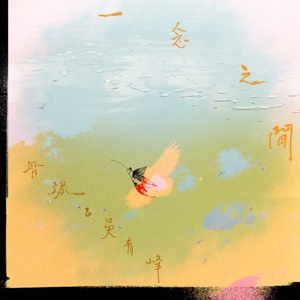
一念之間－在水中
吳青峰、齊豫
入圍：陳君豪、吳青峰
最佳華語男歌手獎
跟著感覺走
張震嶽
LOVE RAGE HOPE
周湯豪

HeartBreakFast 傷心早餐店
盧廣仲
更好
Gummy B
離開銀色荒原
裘德
最佳華語女歌手獎
開
洪佩瑜
如果每天都可以happy happy 誰想要sad:＊- 合作的秘密
陳嫺靜

完整的大人
彭佳慧
Pleasure
JOLIN蔡依林

雙魚宮
劉艾立
純妹妹
單依純
最佳台語男歌手獎
做一個惜情軟心的人
蕭煌奇
褪褲lān的兄弟
吳永吉
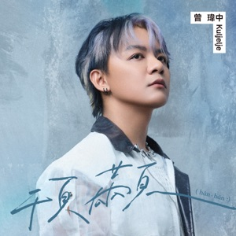
頇顢
曾瑋中
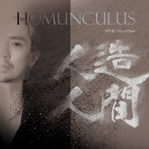
人造人間
周自從
我說
CJ MiT
最佳台語女歌手獎
圓缺
鄭宜農
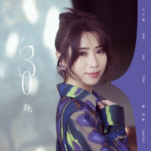
三十幾
陳怡婷
鐵心肝
秀蘭瑪雅

喝酒講酒話
白冰冰

離婚初體驗
PiA吳蓓雅
最佳客語歌手獎
南方的冬
阿依·羅
Final Girl
ana
下回上去
春麵樂隊
慢花誌
陳以諾Sarah
Ngai
黃宇寒
最佳原住民語歌手獎
Saitikotiko 一次又一次
高金龍 Lawis Aow
AKA
Arase 阿拉斯

Kami Kami 我們我們
查勞·巴西瓦里
Mikerid 引路
Suming 舒米恩
djekuacan 年少不努力
Matzka
最佳樂團獎
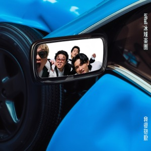
我很抱歉
icyball冰球樂團（王、Nelson、蒙、士捷）
Masonolay i Cepo'
漂流出口（巫尚．碧海、布妲菈．碧海、林肯）
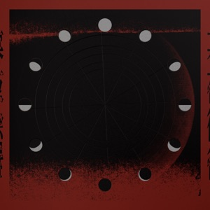
暮夜徐行
老王樂隊（張立長、廖潔民、馮會元、邵佳瑩、童偉碩）
QUIT QUIETLY
落日飛車（羅尊龍、陳弘禮、王少軒、黃浩庭、曾國宏）
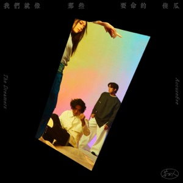
我們就像那些要命的傻瓜
告五人（犬青、雲安、哲謙）

GOOD AFTERNIGHT
甜約翰（吳浚瑋、梁丹郡、陳冠宇、鍾曜年）

說出我的名字
Tizzy Bac（陳惠婷、林前源）
最佳演唱組合獎
OGS
頑童MJ116（瘦子E.SO、小春 Kenzy、大淵MUTA）

MIRROR
GENBLUE 幻藍小熊（XXIN、媛媛、AYEON、Lili、Ayako、Nico）
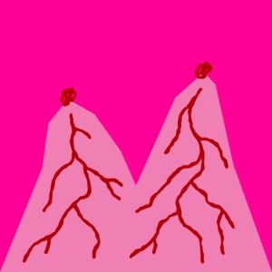
Hidden Album
凹與山（Isan、小凹）
愛的對白
椅子樂團（裘詠靖、陳仲穎、孫伯元）
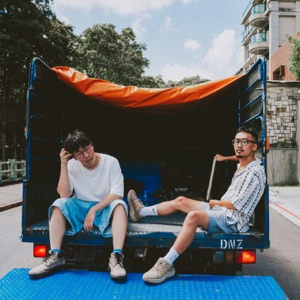
Enough
Dac & 鄭昭元 ZAOYUAN（鄭昭元、Dac）
最佳新人獎
如果每天都可以happy happy 誰想要sad：* - 合作的秘密
陳嫺靜

ALIVE
高真 TRU(高正恩)

海螺記
163 braces(吳朵芸)
慢花誌
陳以諾Sarah
我說
CJ MiT(謝金融)
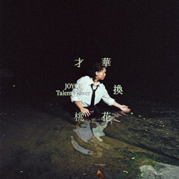
才華換桃花
JOYCE 就以斯（詹佳穎）
演奏類【出版獎】
1 個獎項演奏類最佳專輯獎
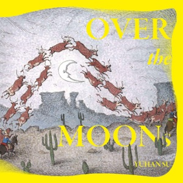
Over The Moons
蘇郁涵

Regrow Protocol
Oberka
心之歸途
大恭
傳奇．雙擊--新視界
黃瑞豐、吳政君
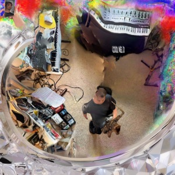
reel mu$ic
cool nel d
演奏類【個人獎】
2 個獎項演奏類最佳專輯製作人獎
Over The Moons
蘇郁涵
Regrow Protocol
Oberka

長夜將盡 電影原聲音樂 (Wild Nights, Tamed Beasts [Original Soundtrack])
丁可
心之歸途
大恭
傳奇．雙擊--新視界
黃瑞豐、吳政君
演奏類最佳作曲人獎
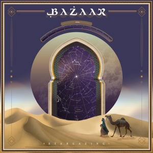
Harsanik
Bazaar
入圍：錢威良

<春 / Spring>
狂想三重奏
入圍：黃令先

Pieces Peace 碎碎平安
蘇郁涵、Alex LoRe、Anna Webber、Matt Mitchell、陳穎達、Marty Kenney、James Paul Nadien、Shinya Lin
入圍：蘇郁涵
金
黃瑞豐、吳政君
居住正義
李軍
rentfree
cool nel d
入圍：Nelson Thomas Ny-Devereaux
技術類【出版獎】
3 個獎項最佳MV獎
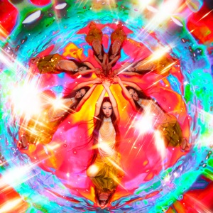
純妹妹
單依純
導演：瓜西西
製作名單
入圍導演：瓜西西

Sakura Gansha
李竺芯
導演：劉熙真
製作名單
入圍導演：劉熙真

此刻
許哲珮
導演：林書宇
製作名單
入圍導演：林書宇

怪情歌
林宥嘉
導演：亞歷三小、自動鮪魚
製作名單
入圍導演：亞歷三小、自動鮪魚
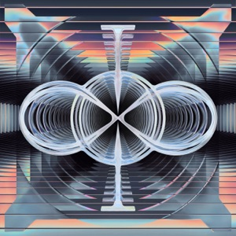
歸零→0
熊仔、王若琳
導演：Ai Chen、凃昭旭
製作名單
入圍導演：Ai Chen、凃昭旭
Pleasure
JOLIN蔡依林
導演：Christian Breslauer
製作名單
入圍導演：Christian Breslauer
Fish Love
JOLIN蔡依林
導演：Rodrigo Inada
製作名單
入圍導演：Rodrigo Inada
Dumplings
icyball冰球樂團
導演：林宏叡
製作名單
入圍導演：林宏叡
最佳演唱錄音專輯獎

當大人
艾薇
製作名單
錄音者：主要錄音人員：陳振發
主要混音人員：樊乃綱、陳振發、林正忠
主要母帶後製人員：Chris GehringerPleasure
JOLIN蔡依林
製作名單
錄音者：主要錄音人員：王永鈞、陳文駿、Xavier Daniel
主要混音人員：Josh Gudwin、Jon Castelli、Phil Tan
主要母帶後製人員：Dale Becker
承諾
張婷雅（Estelle Perrault）
製作名單
錄音者：主要錄音人員：André Baille-Barrelle
主要混音人員：André Baille-Barrelle
主要母帶後製人員：Pascal Luvisidjekuacan 年少不努力
Matzka
製作名單
錄音者：主要錄音人員：謝豐澤
主要混音人員：Matthew Sim
主要母帶後製人員：Matthew Sim
soul.food 靈食
葛仲珊
製作名單
錄音者：主要錄音人員：張閔翔、劉阿洛、施森銘、黃立堯、Cookin Soul、Kvnloverboy、Wayson Scream、陳文駿、葛仲珊
主要混音人員：NealHPogue、John McLucas、Cookin Soul、施森銘、Jae Chong、謝乾乾、Matt Sim
主要母帶後製人員：Mike Bozzi
最佳演奏錄音專輯獎
Over The Moons
蘇郁涵
製作名單
錄音者：主要錄音人員：Aaron Nevezie、Alex Conroy
主要混音人員：Aaron Nevezie、蘇郁涵
主要母帶後製人員：Alex DeTurk
康達效應 Coanda Effect
DonSir樂團
製作名單
錄音者：主要錄音人員：徐振程 Jason Hsu、于世政 Shih Cheng Yu
主要混音人員：David Darlington
主要母帶後製人員：David Darlington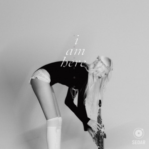
I Am Here
陶璵（Taxodium）
製作名單
錄音者：主要錄音人員：Vincent De Bast
主要混音人員：André Fernandes
主要母帶後製人員：André Fernandes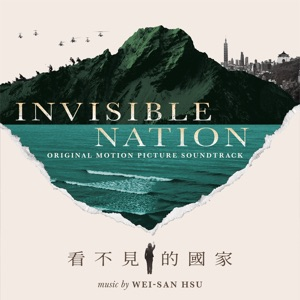
Invisible Nation (Original Motion Picture Soundtrack) 〈看不見的國家〉電影原聲帶
許瑋珊
製作名單
錄音者：主要錄音人員：孫紹庭
主要混音人員：Phil McGowan
主要母帶後製人員：Jett Galindo
我們與惡的距離II影集原聲帶
盧律銘、林孝親、林思妤
製作名單
錄音者：主要錄音人員：林孝親
主要混音人員：林孝親、林思妤
主要母帶後製人員：Rob Kleiner
技術類【個人獎】
1 個獎項最佳裝幀設計獎
暮夜徐行
老王樂隊
入圍：黃嘉宏
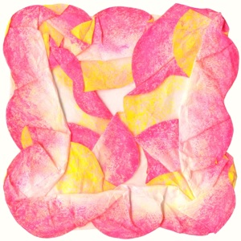
有美夢上讚 Ū bí-bāng siōng tsán
余佩真
入圍：劉悅德
睏 Sleep
姜宜君、廖宇盟
入圍：黃品嘉、王馨
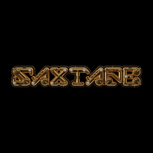
SAX TAPE
SAX MACHINE
入圍：吳建龍、亞歷三小、蔡偉群

女兒的九十九種藍——聽見零雨
羅思容
入圍：聶永真、陳聖智、林智凱
Hidden Album
凹與山
入圍：吳建龍、力王、畢展熒
評審團獎
1 個獎項評審團獎
老翅膀
陳小霞
特別貢獻獎
1 個獎項特別貢獻獎
屠穎
入圍：屠穎
林煌坤
入圍：林煌坤
找不到符合的入圍作品，換個關鍵字試試。